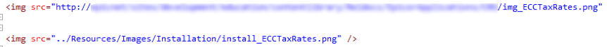

XML File Migration from XMetal into Flare
This document guides you through the process of moving XML files from the legacy documentation system into a Flare project. You can use it when you need to migrate the documents that do not need much rework on the structure and style.
Before you begin
The import process may bring in additional CSS styles we do not use. To avoid overwriting the existing styles, you should work on imported files in a local project (we refer to it as “sandbox”).
To create a sandbox project, copy the template project from Git and put it into a chosen folder on your machine.
Export files from XMetal
First, you export the necessary files from the SharePoint library using the export feature in XMetal.
- Launch XMetal as Administrator and select Repository > Open from Repository.
- Right-click the folder you want to export and select Export.

- Select a folder for exported files on your machine and click OK. Wait while the application completes the process.
Import files into Flare
The legacy system uses DITA for structuring XML files, so to import the files to Flare, you use the DITA import feature that simplifies the conversion of such files.
- Open your sandbox project in Flare. DO NOT import the files to projects connected to Git.
- On the Project tab, select Import > DITA Document Set.

- Select the Import into this project option and click Next.
- In the Select DITA Documents to import dialog, click the + button and browse to the files exported from XMetal. Use SHIFT+Click to select multiple files.
- Clear the Link generated files to source files check box. Click Next.
- In the Options dialog, keep the Import all Content files to one folder check box selected.

- In the Stylesheet dialog, click Conversion Styles.
- In the DITA Import Styles Editor, the Styles pane displays the tags that may be part of you XMetal files. You need to adjust their markup properties for the application to convert the XML tags correctly.
For example, under concept, select concept and change the XhtmlTag value to p.
The below table includes the list of the most used tags and the new markup properties that you should assign to them.
Tag Values concept > concept XhtmlTag: p note > Note, NoteImportant, NoteTip XhtmlTag: p task > context, info, postreq, prereq, result, stepresult, task XhtmlTag: p tblDecl > entry XhtmlTag: td Class: table--bordered
tblDecl > table XhtmlTag: table Class: table
tblDecl > tbody XhtmlTag: tbody Class: table--bordered
tblDecl > thead XhtmlTag: thead Class: table--color-header
Title > ConceptTitle, TaskTitle XhtmlTag: h1 Class: firstH1
topic > abstract, example, section, shortdesc, topic XhtmlTag: p - When you are done, click OK to close the style editor. Then click Finish.
- When the import process completes, preview the files and select Accept.
Clean up imported files
The converted files have obsolete classes and tags you need to clean up or replace. You can handle these mass updates in the plain text editor.
- Navigate to the folder where you imported the files.
- Delete the .css file in the folder and in the Link Update dialog, select Remove Links.
- Open any file in the imported folder and switch to the Text Editor view.
- On the Home tab, select Find and Replace.
- On the Find Elements tab, under Find, select Tag and in the filed to the right, enter span.
- Under Replace/Action, select Unbind Tag.
- Under Find in, select documents in the same folder and then select Replace All.
- Select the Find Text tab. Under Find in, select documents in the same folder.
- Under Options, select Find in source code.
- Replace the following classes with a blank value (note, there’s a space before class):
class="task"
class="taskbody"
class="context"
class="steps"
class="substep"
class="info"
class="result"
class="concept"
class="conbody"
- Make the following replacements:
Find Replace class="note" class="epnote" class="noteImportant" class="epnote-a" class="noteTip" class="epnote-opt" class="substeps" style="list-style-type: lower-alpha;"
Restore images
If the files you imported had images, their references are preserved as they were in the original files, pointing to the SharePoint library. You can change the references to link to the images with the same names in the current Flare project.
Afer you update the image references, you also need to assign them with the standard class.
- Create a folder under Content/Resources/Images and copy the images imported from XMetal into it. If needed, add the necessary name prefixes.
- Open a file that includes any image in the Text Editor view and locate the image reference.
- Insert an image from the he folder where you copied the exported images into the file to see what the new reference should look like.

- Copy the SharePoint path to the file and use Find and Replace to update the path.
For example, if you updated the image name prefixes, you may need to make the following replacement:
https://sharepoint/sites/education/contentlibrary/Installation/img_
to
../Resources/Images/InstallaLon/install_
 If all your images were in the same folder, you can mass-replace the references using Replace All.
If all your images were in the same folder, you can mass-replace the references using Replace All. - After you replace the references, switch to the XML Editor view to check if the images display in the file. If this does not happen, verify the links and image names are correct.
- Now you need to assign the standard class to the images. To do this for multiple images at once, go to Find and Replace > Find Elements.
- Under Find, select Tag and set it to img.
- Under Replace/Action, select Add Class and in the field to the right, enter image-with-border.
- Verify Find in is set to documents in the same folder and select Replace All.
Format imported tables
The look of the imported tables may differ depending on the type they had in the XMetal file.
Normal tables have the necessary classes assigned during the import and display as needed, however they may have additional styles assigned to rows and columns. You may need to review and clean them up.
Simpletables do not get assigned with the necessary classes during the import and do not include the
Move files to production
When you complete conversion and cleanup, you can move the XML files and images to your production project. You can then attach them to an existing TOC or create a new one.
Credits
Base template: https://github.com/charlyllo/doctemplate.